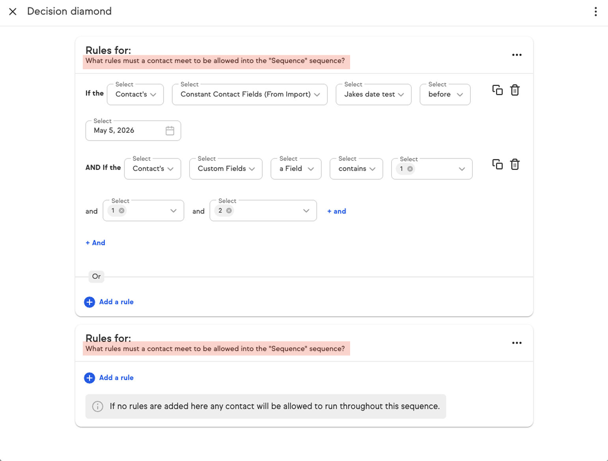

AUD-05
Medium
Title doesn’t scale across entity types

▢
Image 5 — hardcoded title highlighted in red
images/aud-05-title-scaling.png
Pain point
The current heading hardcodes “What rules must a contact meet to be allowed into the ‘Sequence’ sequence?” As the product introduces additional entities beyond Contact and Sequence, this copy won’t carry over and will require manual updates for each new entity.
Recommendation
Shorten the heading to “Rules for ‘[Entity Name]’” with the entity name dynamically bound, and remove the descriptive sub-question. Pattern then scales across current and future entity types.